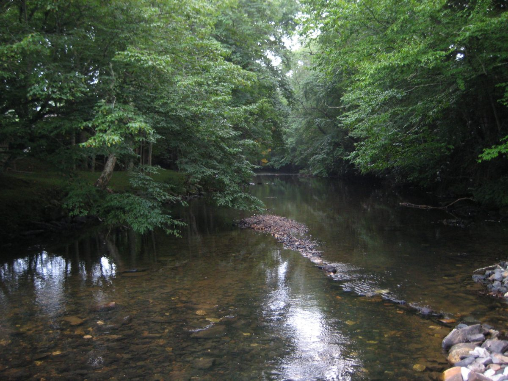

NORTH CAROLINA · THE MOUNTAIN GATEWAY
Linville
Tuesday · November 10
Treat Linville as the transition from the Asheville transfer into a short scenic mountain afternoon. One well-chosen walk is enough before Blowing Rock.
THE FEEL OF THE PLACE
Atmosphere.
Linville is primarily a gateway to high-country scenery rather than a town for a long shopping wander. The rewarding part is the change in landscape and access to selected viewpoints, with weather and open roads deciding the day. Carry a picnic for Tuesday: several atmospheric local stops close early in the week, and the verified nearby Italian option opens only at dinner.

Resized and JPEG-compressed for this guide; no scene alterations.
Representative photograph from the linked archive; seasons and current conditions will differ.
A SUGGESTED RHYTHM
Make the stop your own.
Main choice · Beacon Heights
The NPS describes this rocky, rooty hike as less than a mile, with roughly 100 feet of climbing and two rock outcrops. Allow 45–75 minutes at Parkway milepost 305.2. Choose it only with suitable weather and current access.
Then · Blowing Rock
Continue to Blowing Rock for town time or the museum. If weather is poor, shorten the outdoor day and spend longer indoors. Aim to finish mountain walks by 4pm.
Linville Falls · Do not assume access
An open road spur does not guarantee open waterfall trails. The road and trail closures are tracked separately. Check current NPS information before making the falls a replacement hike.
EAT WELL, KEEP IT SIMPLE
A couple of good places to eat.
Casual choices for this stop, with restaurant information and independent reviews or local guides to help you choose. Published prices exclude extras unless noted; recheck hours before setting off.
Cellucci’s Italian Restaurant & Bar · nearby Pineola
Pizza, calzones and pasta at 2855 Linville Falls Highway in Pineola, south of Linville. Sharing a pizza can control the bill. This is a nearby dinner fallback, not a Tuesday lunch stop, and may be awkward before the 6pm Boone concert.
Budget: Budget-conscious if sharing pizza; current menu amount not verified.
When to go: Official Tuesday 4–8pm. For the base itinerary, pack lunch or eat earlier in Black Mountain instead.
CHECK BEFORE YOU GO
Useful sources.
Road and trail conditions can change with weather and repairs. Driving and visit durations are planning allowances, not live navigation. Recheck opening hours and dated events shortly before travel.